🛡️ 西王国的圣骑士
Paladins of the West Kingdom · 设计：Shem Phillips & S J Macdonald · Garphill Games 出版 · 1–4 人 · 官方英文规则书全文翻译（36 页 · AI 辅助机翻）
本页收录《西王国的圣骑士》（Paladins of the West Kingdom, 2019）的原版官方规则书全部 36 页（底本：Garphill Games 官方（官方 Shopify 店铺 CDN），PaladinsRulebook.pdf），逐页随图排列，点击任意图片即可放大查看；每页下方默认折叠了该页的 AI 辅助中文机翻对照，需要时可展开。规则内容归 Garphill Games 及版权方所有，收录仅供个人学习查阅。
整理说明：机翻对照按本站术语口径对齐（牌库/手牌/回合/轮/板块/指示物等），PDF 图文混排页的语序可能与原书视觉顺序略有出入；规则细节请一律以页面上方原书页面为准。
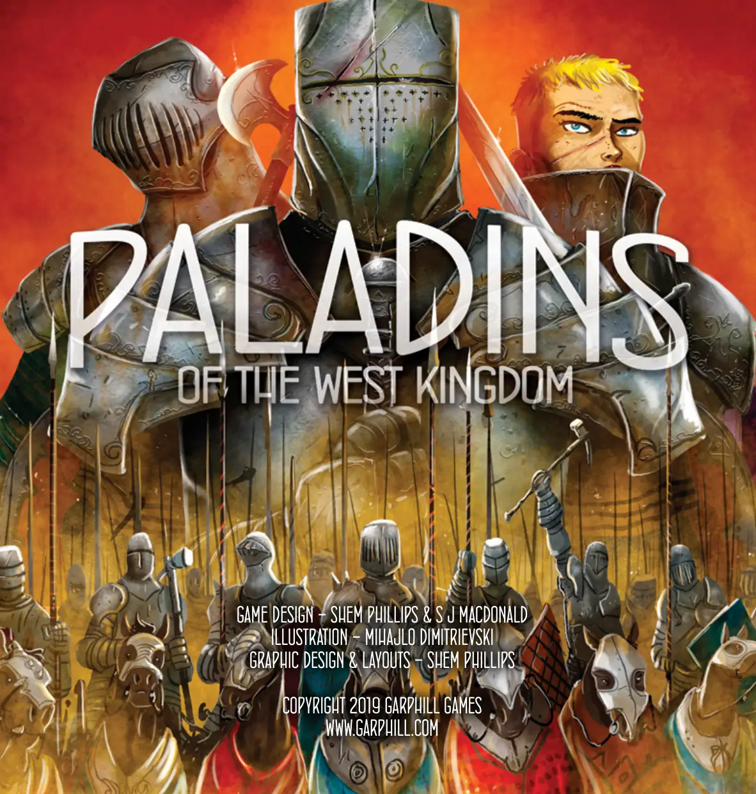
📝 第 1 页 AI 机翻对照（点击展开）
游戏设计 - shem phillips & s j macdonald
插画 - mihajlo dimitrievski
平面设计与版式 - shem phillips
版权 2019 garphill games
www.garphill.com
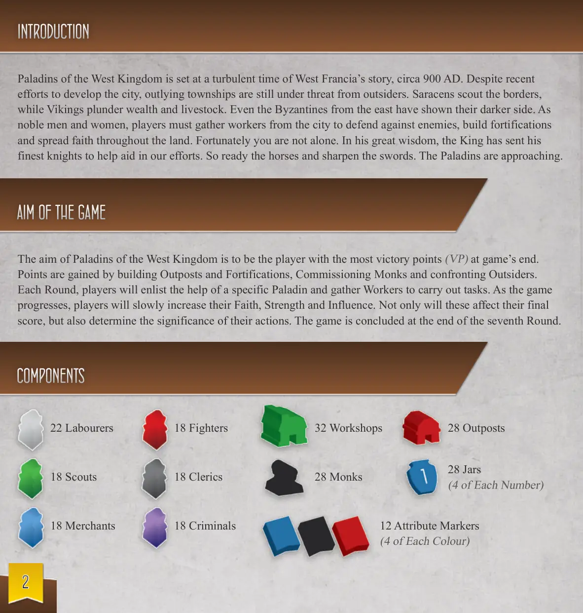
📝 第 2 页 AI 机翻对照（点击展开）
引言
《西王国圣骑士》(Paladins of the West Kingdom) 背景设定在西法兰克王国动荡的历史时期，约公元900年。尽管最近努力发展城市，但周边城镇仍受到外来者的威胁。萨拉森人(Saracens)在边境侦察，而维京人则掠夺财富和牲畜。甚至来自东部的拜占庭人也展现了他们阴暗的一面。作为贵族男女，玩家必须从城市中召集工人来抵御敌人、建造防御工事并在整个土地上传播信仰。幸运的是，你并非孤身一人。凭借其伟大的智慧，国王已派遣他最优秀的骑士来帮助我们。因此，备好战马，磨利剑刃。圣骑士们正在接近。
《西王国圣骑士》的目标是在游戏结束时成为拥有最多胜利点(VP)的玩家。通过建造前哨站和防御工事、派遣僧侣以及对抗外来者来获得分数。每轮，玩家将寻求特定圣骑士的帮助并召集工人来执行任务。随着游戏的进行，玩家将逐渐增加他们的信仰、力量和影响力。这些不仅会影响他们的最终得分，还决定了他们行动的重要性。游戏在第七轮结束时结束。
组件
游戏目标
12 属性标记
(每种颜色4个)
22 劳工者
32 工作坊
18 战士
28 前哨站
18 侦察兵
28 僧侣
18 神职人员
28 罐子
(每种数字4个)
18 商人
18 罪犯
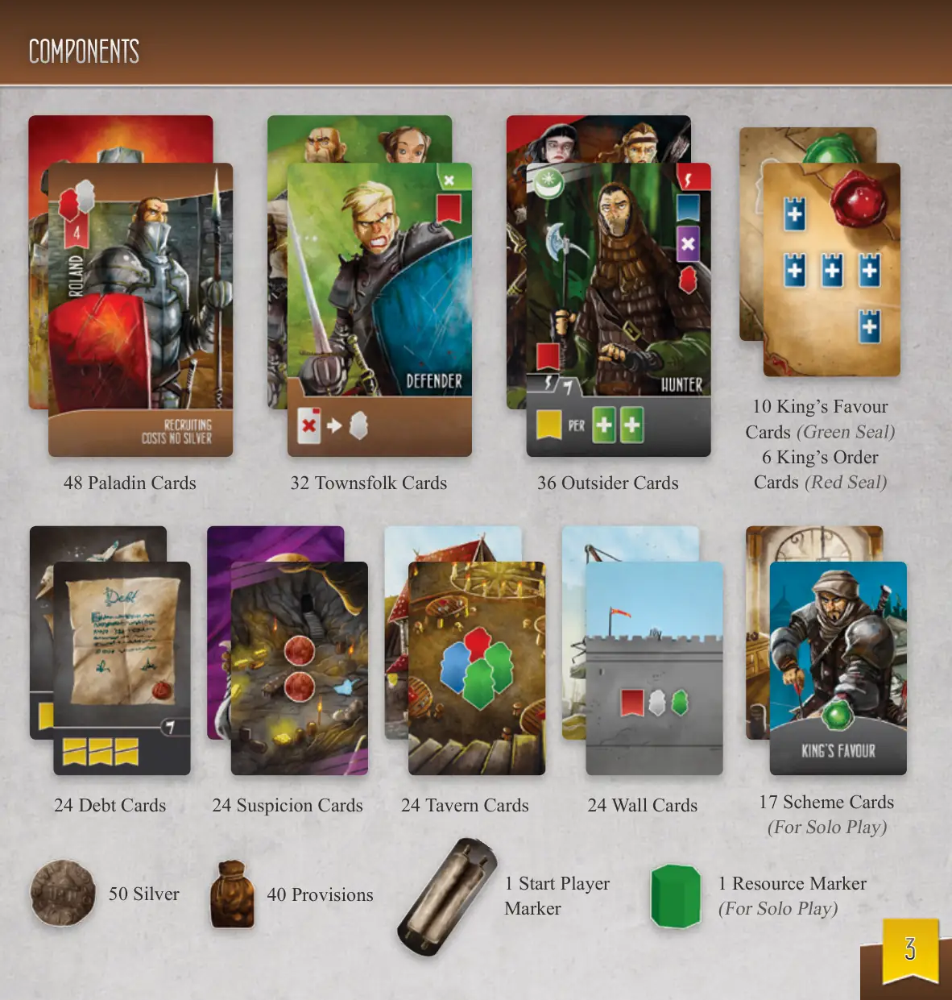
📝 第 3 页 AI 机翻对照（点击展开）
组件
50 银币
40 粮食
1 起始玩家
标记
1 资源标记
(用于单人模式)
48 圣骑士卡牌
32 市民卡牌
17 阴谋卡牌
(用于单人模式)
36 外来者卡牌
24 怀疑卡牌
24 债务卡牌
24 酒馆卡牌
24 墙壁卡牌
10 国王恩宠
卡牌 (绿色印章)
6 国王命令
卡牌 (红色印章)
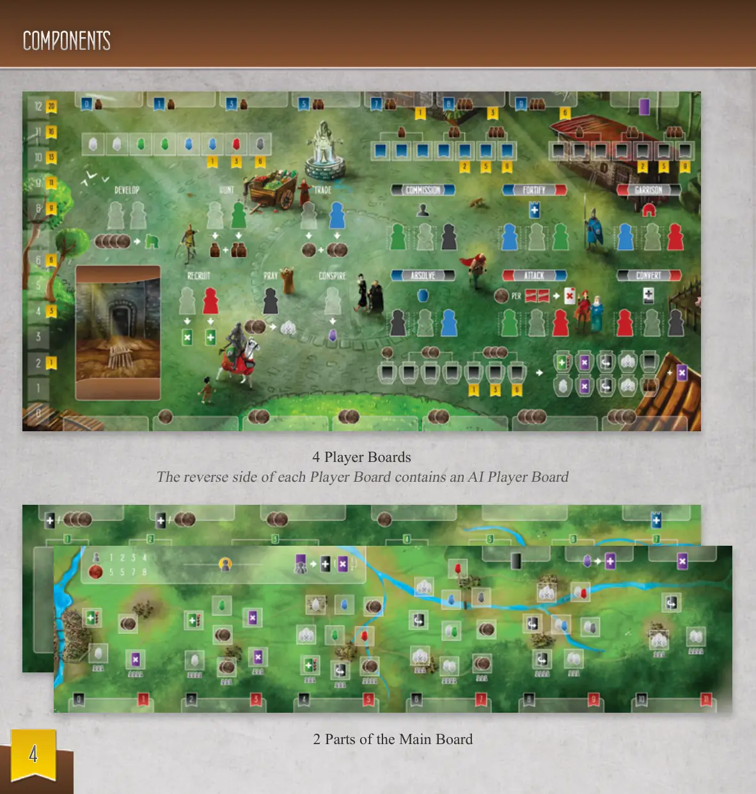
📝 第 4 页 AI 机翻对照（点击展开）
组件
4 玩家版图
每个玩家版图的背面包含一个AI玩家版图
2 主版图部件
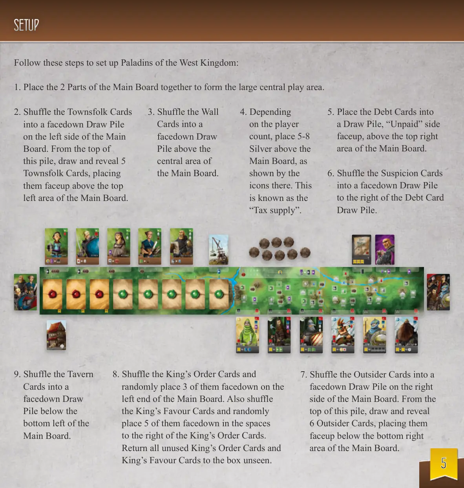
📝 第 5 页 AI 机翻对照（点击展开）
设置
按照以下步骤设置《西王国圣骑士》(Paladins of the West Kingdom)：
- 将主版图的两部分拼接在一起，形成中央游戏区域。
2. 将平民卡(Townsfolk Cards)洗混，面朝下放置在主版图左侧，形成一个牌库。从牌库顶部摸取并展示5张平民卡，将它们面朝上放置在主版图左上区域上方。
7. 将外来者卡(Outsider Cards)洗混，面朝下放置在主版图右侧，形成一个牌库。从牌库顶部摸取并展示6张外来者卡，将它们面朝上放置在主版图右下区域下方。
9. 将酒馆卡(Tavern Cards)洗混，面朝下放置在主版图左下角，形成一个牌库。
3. 将城墙卡(Wall Cards)洗混，面朝下放置在主版图中央区域上方，形成一个牌库。
- 将国王命令卡(King's Order Cards)洗混，随机选择3张面朝下放置在主版图左端。同时将国王恩宠卡(King's Favour Cards)洗混，随机选择5张面朝下放置在国王命令卡右侧的格子里。将所有未使用的国王命令卡和国王恩宠卡放回盒中，不要查看。
4. 根据玩家数量，在主版图上方放置5-8枚银币(Silver)，如主版图上的图标所示。这被称为"税收供应"(Tax supply)。
5. 将债务卡(Debt Cards)放入一个牌库，"未付"(Unpaid)面朝上，放置在主版图右上区域上方。
6. 将嫌疑卡(Suspicion Cards)洗混，面朝下放置在债务卡牌库右侧。
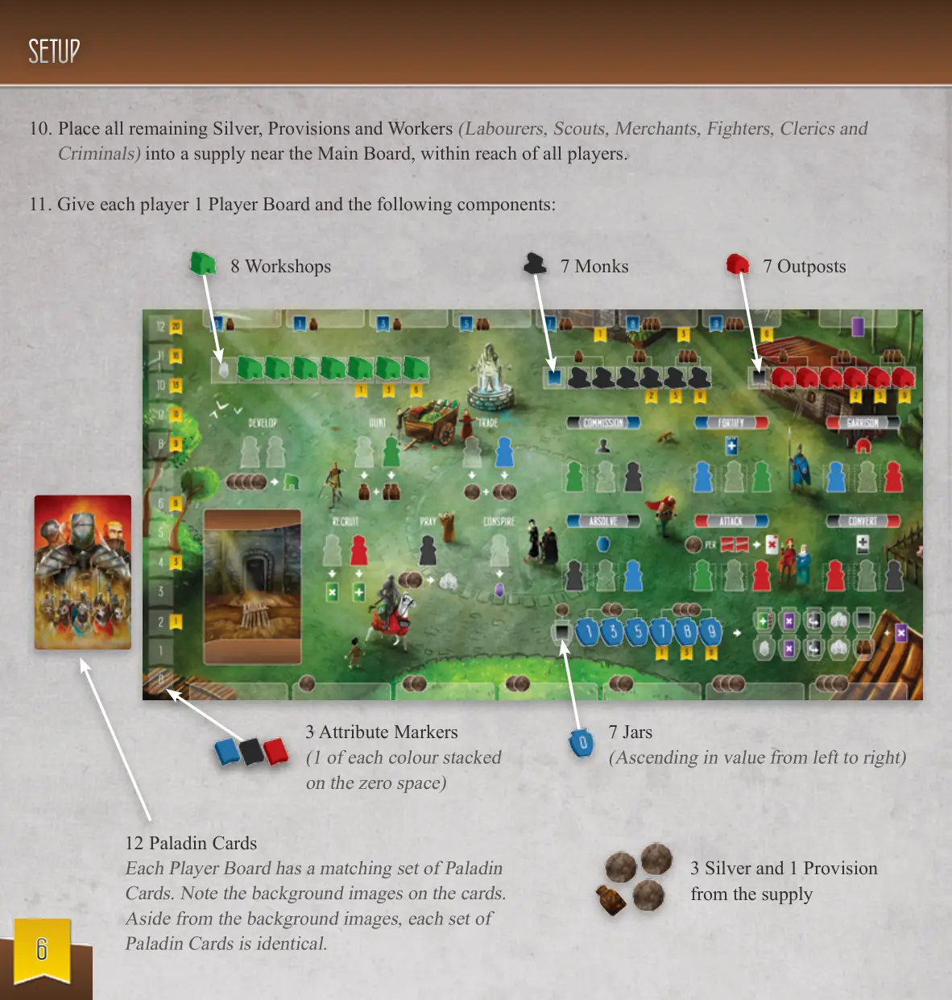
📝 第 6 页 AI 机翻对照（点击展开）
设置
- 将所有剩余的银币(Silver)、补给(Provisions)和工人(劳工(Labourers)、侦察兵(Scouts)、商人(Merchants)、战士(Fighters)、牧师(Clerics)和罪犯(Criminals))放入主版图附近的供应区，所有玩家都能拿到。
- 给每位玩家1个玩家版图(Player Board)和以下组件：
8个工坊(Workshops)
7个罐子(Jars)
(从左到右价值递增)
3个属性标记(Attribute Markers)
(每种颜色各1个，堆叠在0格上)
12张圣骑士卡(Paladin Cards)
每个玩家版图都有一套对应的圣骑士卡。注意卡牌上的背景图像。除了背景图像外，每套圣骑士卡都是相同的。
3枚银币和1个补给
(取自供应区)
7个修士(Monks)
7个前哨站(Outposts)
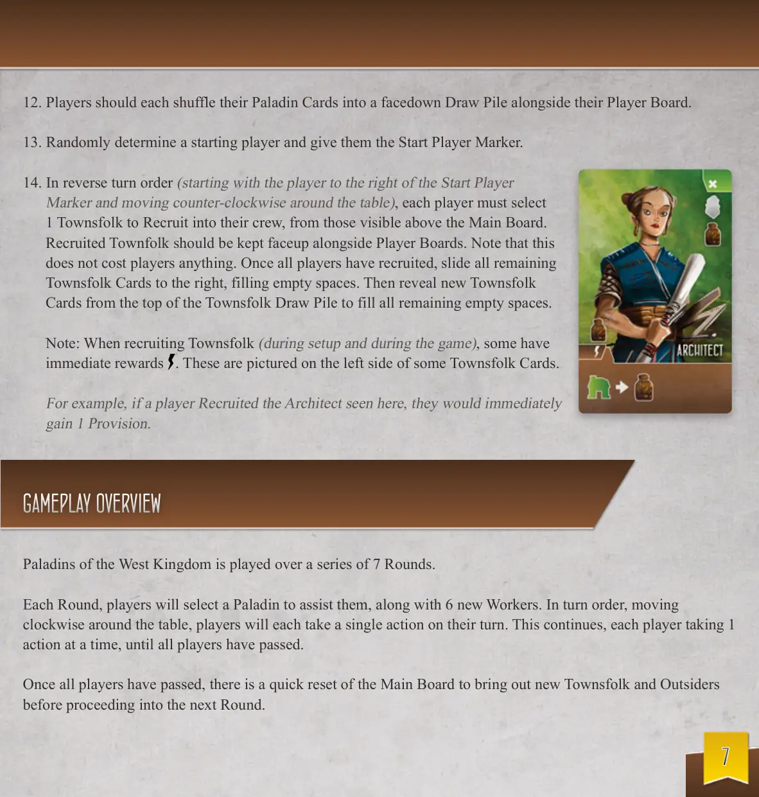
📝 第 7 页 AI 机翻对照（点击展开）
- 玩家应将其圣骑士卡洗入面朝下的牌库中，并放在其玩家版图旁边。
- 随机决定起始玩家，并将起始玩家标记交给该玩家。
- 按逆时针顺序（从起始玩家标记右侧的玩家开始，围绕桌子逆时针移动），每位玩家必须从主版图上方可见的城镇居民中选择1名招募到其队伍中。招募的城镇居民应面朝上放置在玩家版图旁边。请注意，这不会花费玩家任何资源。所有玩家招募完毕后，将所有剩余的城镇居民卡向右滑动，填满空位。然后从城镇居民牌库顶部翻开新的城镇居民卡，填满所有剩余空位。
注意：在招募城镇居民（在设置阶段和游戏期间）时，有些会立即获得奖励。这些奖励显示在某些城镇居民卡片的左侧。例如，如果玩家招募了此处所示的建筑师，他们将立即获得1份补给。
《西王国的圣骑士》(Paladins of the West Kingdom) 游戏进行7个回合。
每个回合，玩家将选择一名圣骑士协助他们，以及6名新工人。按顺时针顺序围绕桌子，玩家将在自己的回合中选择一个行动。这会持续进行，每位玩家每次行动1次，直到所有玩家都选择跳过。
所有玩家都选择跳过后，将快速重置主版图，以推出新的城镇居民和局外人，然后进入下一回合。
游戏概览
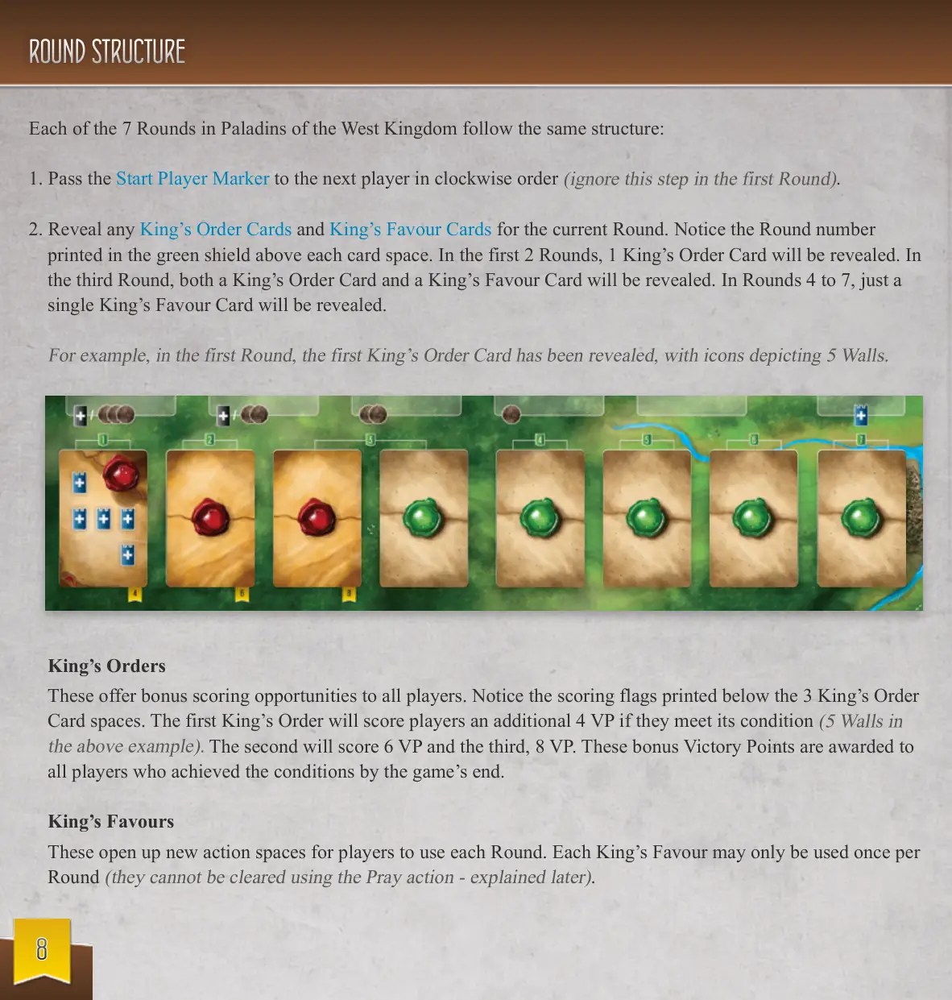
📝 第 8 页 AI 机翻对照（点击展开）
轮次结构
《西王国圣骑士》(Paladins of the West Kingdom)中的7个轮次都遵循相同结构：
- 将起始玩家标记顺时针传递给下一位玩家（第一轮跳过此步骤）。
- 显示当前轮次的任何国王命令卡和国王恩惠卡。注意每张卡牌区域上方绿色盾牌中印刷的轮次编号。在前两轮，将显示1张国王命令卡。第三轮将同时显示1张国王命令卡和1张国王恩惠卡。在第4至7轮，仅显示1张国王恩惠卡。
例如，在第一轮，第一张国王命令卡已被揭示，上面描绘了5个城墙的图标。
国王命令
这些为所有玩家提供额外的得分机会。注意3张国王命令卡空间下方印刷的得分旗帜。第一张国王命令卡如果玩家满足其条件（如上述例子中的5个城墙），将为玩家额外提供4 VP。第二张提供6 VP，第三张提供8 VP。这些额外胜利点将在游戏结束时授予所有达成条件的玩家。
国王恩惠
这些为玩家在每轮开启新的行动空间。每张国王恩惠卡每轮只能使用一次（它们不能通过祈祷行动清除——后面会解释）。
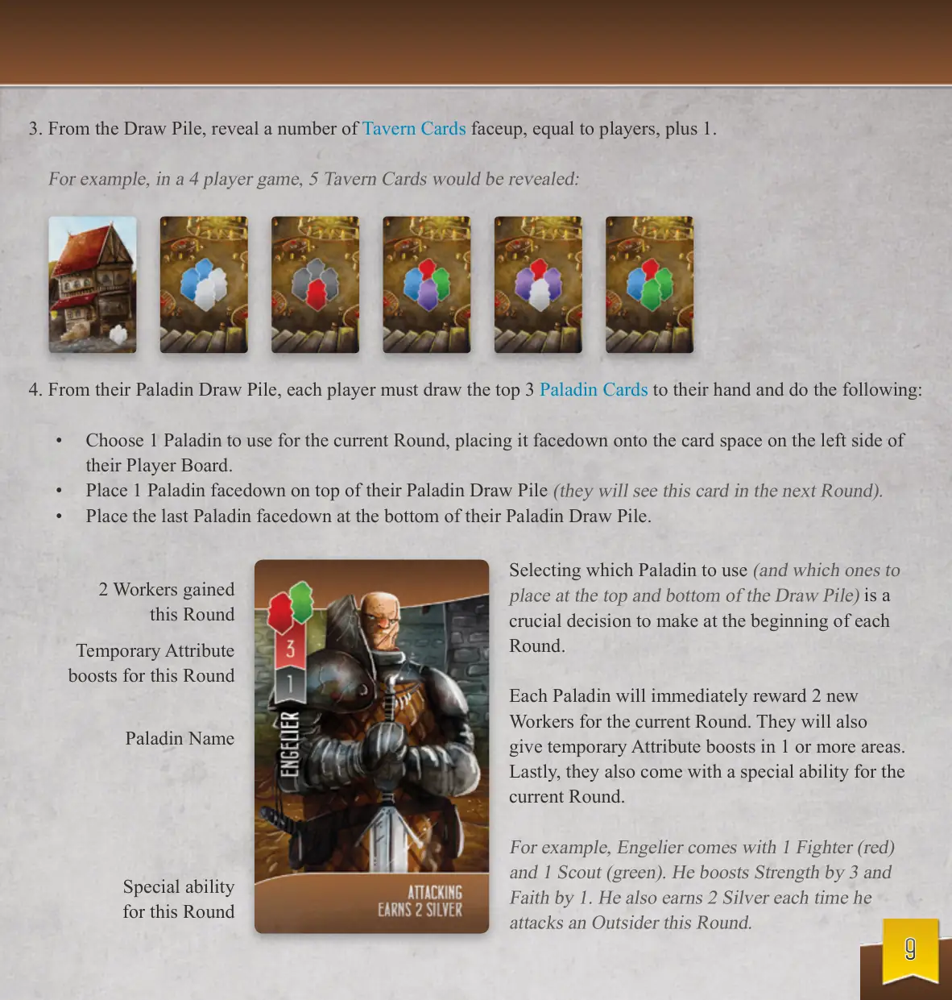
📝 第 9 页 AI 机翻对照（点击展开）
- 从牌库中，面朝上揭示数量等于玩家数加1的酒馆卡。
例如，在4人游戏中，将揭示5张酒馆卡：
- 每位玩家必须从他们的圣骑士牌库中抽取顶部3张圣骑士卡到手牌，并执行以下操作：
• 选择1张圣骑士用于当前轮，将其面朝下放置在他们玩家板左侧的卡牌空间上。
• 将1张圣骑士面朝下放在他们圣骑士牌库的顶部（他们将在下一轮看到这张卡）。
• 将最后一张圣骑士面朝下放在他们圣骑士牌库的底部。
本轮获得的2个工人
本轮的临时属性提升
本轮的特殊能力
圣骑士姓名
选择使用哪张圣骑士（以及将哪些放在牌库顶部和底部）是每轮开始时必须做出的关键决定。
每位圣骑士将立即为当前轮次奖励2个新工人。他们还将在1个或多个区域提供临时属性提升。最后，他们还附带当前轮次的一项特殊能力。
例如，Engelier带有1个战士（红色）和1个侦察兵（绿色）。他将力量提升3点，信仰提升1点。此外，在本轮中，每次他攻击外来者时，他将赚取2枚银币。
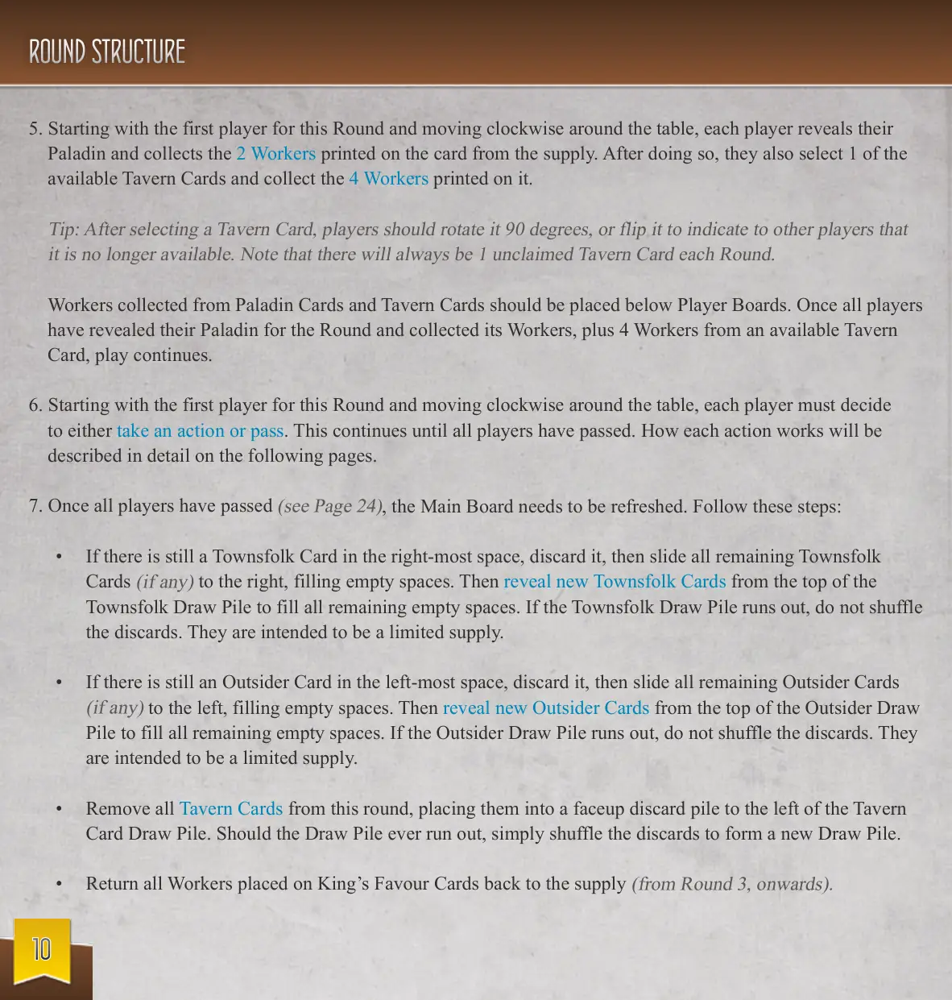
📝 第 10 页 AI 机翻对照（点击展开）
回合结构
- 从本回合的第一位玩家开始，按顺时针方向围绕桌子，每位玩家揭示他们的圣骑士（Paladin）并从牌库中获取卡牌上印有的2个工人。完成后，他们还需选择1张可用的酒馆卡（Tavern Card）并获取其上印有的4个工人。
提示：选择酒馆卡后，玩家应将其旋转90度或翻转，以向其他玩家表明它已不可用。请注意，每回合总会有1张未被领取的酒馆卡。
从圣骑士卡和酒馆卡获取的工人应放置在玩家版图下方。一旦所有玩家都揭示了他们本回合的圣骑士并获取了其工人，以及从可用酒馆卡获取的4个工人，游戏继续进行。
- 从本回合的第一位玩家开始，按顺时针方向围绕桌子，每位玩家必须决定采取行动或跳过。此过程持续进行，直到所有玩家都跳过为止。各种行动的具体工作原理将在后续页面详细描述。
- 一旦所有玩家都跳过（参见第24页），主版图需要刷新。请遵循以下步骤：
• 如果最右侧区域仍有市民卡（Townsfolk Card），则将其弃置，然后将所有剩余的市民卡（如有）向右滑动，填满空位。然后从市民牌库（Townsfolk Draw Pile）顶部翻出新的市民卡，填满所有剩余空位。如果市民牌库用尽，不要洗牌弃牌堆。它们是有限供应的。
• 如果最左侧区域仍有外来者卡（Outsider Card），则将其弃置，然后将所有剩余的外来者卡（如有）向左滑动，填满空位。然后从外来者牌库（Outsider Draw Pile）顶部翻出新的外来者卡，填满所有剩余空位。如果外来者牌库用尽，不要洗牌弃牌堆。它们是有限供应的。
• 移除本回合的所有酒馆卡，将其放置在酒馆牌库左侧的明置弃牌堆中。如果牌库用尽，只需将弃牌堆洗牌形成新的牌库。
• 将所有放置在国王恩惠卡（King's Favour Cards）上的工人返还到牌库中（从第3回合开始）。
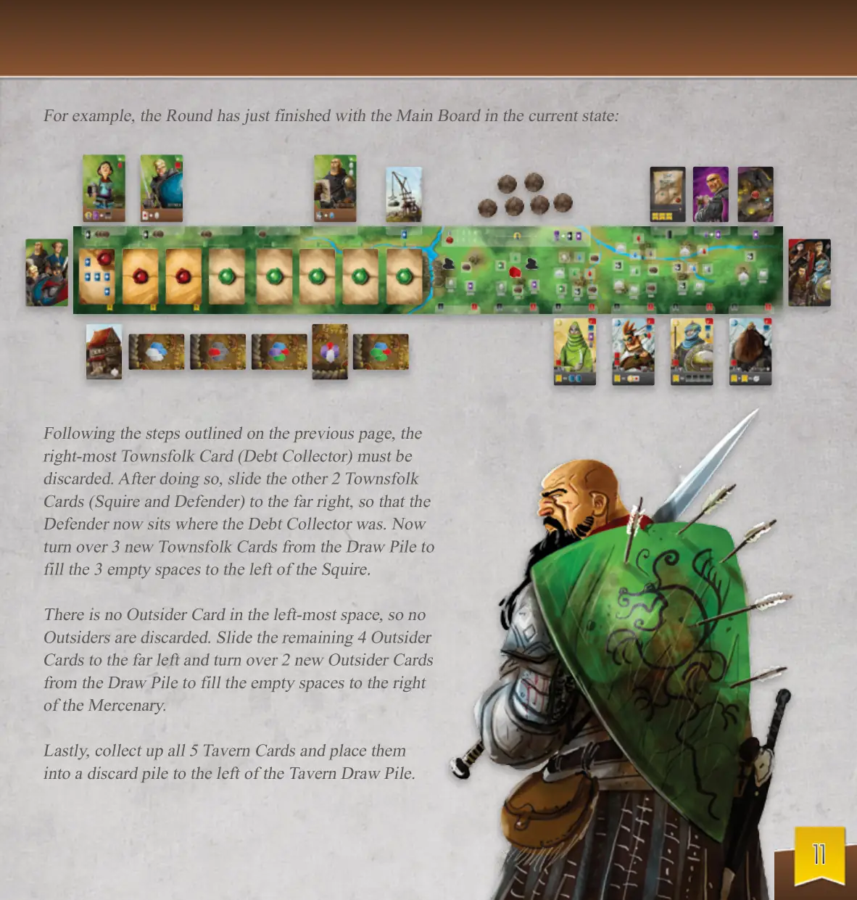
📝 第 11 页 AI 机翻对照（点击展开）
例如，一轮刚刚结束，主版图处于当前状态：
按照前一页概述的步骤，最右侧的平民卡（债务收集者）必须被弃置。弃置后，将另外2张平民卡（侍从和防御者）向最右侧滑动，使防御者现在占据债务收集者原来的位置。然后从牌库中翻开3张新的平民卡，填充到侍从左侧的3个空位。
最左侧的空位没有外来者卡，因此没有外来者被弃置。将剩余的4张外来者卡向最左侧滑动，并从牌库中翻开2张新的外来者卡，填充到佣兵右侧的空位。
最后，收集起所有5张酒馆卡，并将它们放置到酒馆牌库左侧的弃牌堆中。
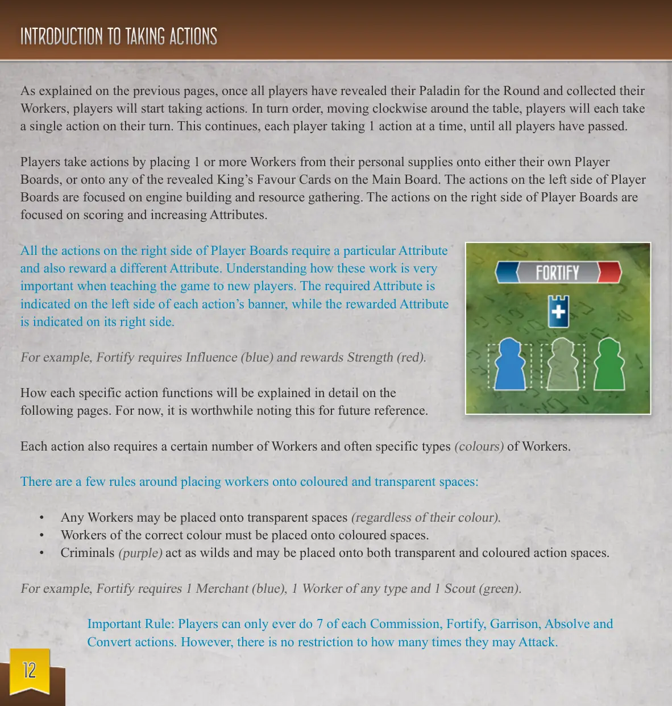
📝 第 12 页 AI 机翻对照（点击展开）
行动介绍
如前几页所述，一旦所有玩家为该轮展示了他们的圣骑士并收集了工人，玩家将开始行动。按顺时针顺序轮流进行，每位玩家在自己的回合执行一个行动。这个过程持续进行，每位玩家每次执行1个行动，直到所有玩家都选择跳过。
玩家通过将1个或多个工人从个人储备区放置到自己的玩家版图上，或放置到主版图上已揭示的国王恩惠卡牌上来执行行动。玩家版图左侧的行动专注于引擎构建和资源收集。玩家版图右侧的行动专注于得分和提升属性。
玩家版图右侧的所有行动都需要特定属性，同时也会奖励不同的属性。在向新玩家教授游戏时，理解这些机制如何运作非常重要。所需属性显示在每个行动横幅的左侧，而奖励属性则显示在其右侧。
例如，强化( Fortify )需要影响力(蓝色)并奖励力量(红色)。
每个具体行动的功能将在后续页面详细解释。目前，值得注意这一点以供将来参考。
每个行动还需要特定数量的工人，通常是特定类型(颜色)的工人。
关于将工人放置在彩色和透明区域有以下几条规则：
• 任何工人都可以放置在透明区域上(无论其颜色如何)。
• 正确颜色的工人必须放置在彩色区域上。
• 罪犯(紫色)作为万能工人，可以放置在透明和彩色行动区域上。
例如，强化需要1个商人(蓝色)、1个任何类型的工人和1个侦察兵(绿色)。
重要规则：玩家每种强化( Commission )、巩固( Fortify )、驻防( Garrison )、赦免( Absolve )和皈依( Convert )行动最多只能执行7次。然而，攻击( Attack )行动的次数没有限制。
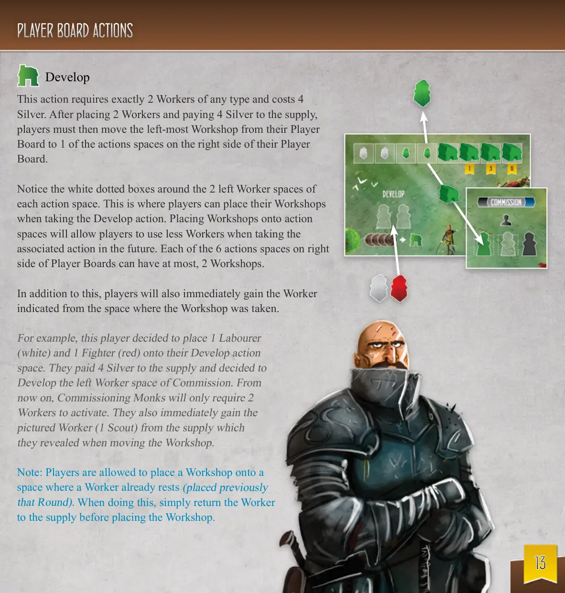
📝 第 13 页 AI 机翻对照（点击展开）
玩家板块行动
此行动需要恰好2名任意类型的工人，并花费4银。在放置2名工人并向牌库支付4银后，玩家必须将其玩家板块上最左侧的工坊移动到其玩家板块右侧的行动空间之一。
注意每个行动空间左侧2个工人空间周围的白色虚线框。这是玩家在进行发展行动时可以放置其工坊的位置。将工坊放置到行动空间上将使玩家在未来执行相关行动时使用更少的工人。玩家板块右侧的6个行动空间最多可以有2个工坊。
除此之外，玩家还将立即获得从工坊所在空间指示的工人。
例如，这名玩家决定在其发展行动空间上放置1名劳工（白色）和1名战士（红色）。他们向牌库支付了4银，并决定发展委托（Commission）的左侧工人空间。从现在起，委托僧侣将只需要2名工人即可激活。他们还立即从牌库获得了图中所示的工人（1名侦察兵），这是他们在移动工坊时揭示的。
注意：玩家可以将工坊放置到已有工人休息的空间上（该回合之前放置的）。这样做时，只需在放置工坊前将工人返回牌库即可。
发展
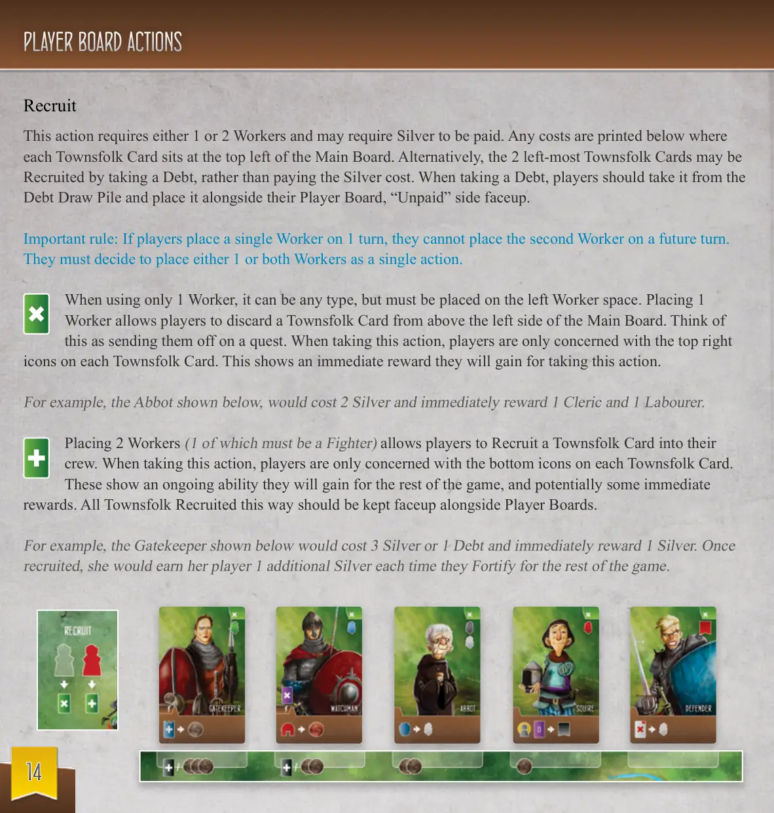
📝 第 14 页 AI 机翻对照（点击展开）
玩家板块行动
此行动需要1或2名工人，并且可能需要支付银币。任何费用都印在主版图左上角每个市民卡所在位置的下方。或者，左边的两张市民卡可以通过承担债务而非支付银币费用来招募。当承担债务时，玩家应从债务牌堆中取出它，并将其放在玩家板块旁边，"未支付"面朝上。
重要规则：如果玩家在一个回合内放置1名工人，他们不能在未来的回合中放置第二名工人。他们必须决定放置1名或2名工人作为一个单一行动。
当只使用1名工人时，可以是任何类型，但必须放置在左侧工人格上。放置1名工人允许玩家从主版图左侧上方弃掉一张市民卡。可以将其理解为派遣他们去执行任务。当执行此行动时，玩家只关心每张市民卡右上角的图标。这显示了他们执行此行动将获得的即时奖励。
例如，下面显示的修道院长将花费2银币，并立即奖励1名神职人员和1名劳工。
放置2名工人（其中必须是1名战士）允许玩家招募一名市民卡加入他们的队伍。当执行此行动时，玩家只关心每张市民卡底部的图标。这些图标显示了他们在游戏剩余时间内将获得的持续能力，以及一些可能的即时奖励。通过这种方式招募的所有市民卡应与玩家板块一起正面朝上放置。
例如，下面显示的门卫将花费3银币或1债务，并立即奖励1银币。一旦被招募，她将为她的玩家在游戏剩余时间内每次加固时额外赚取1银币。
招募
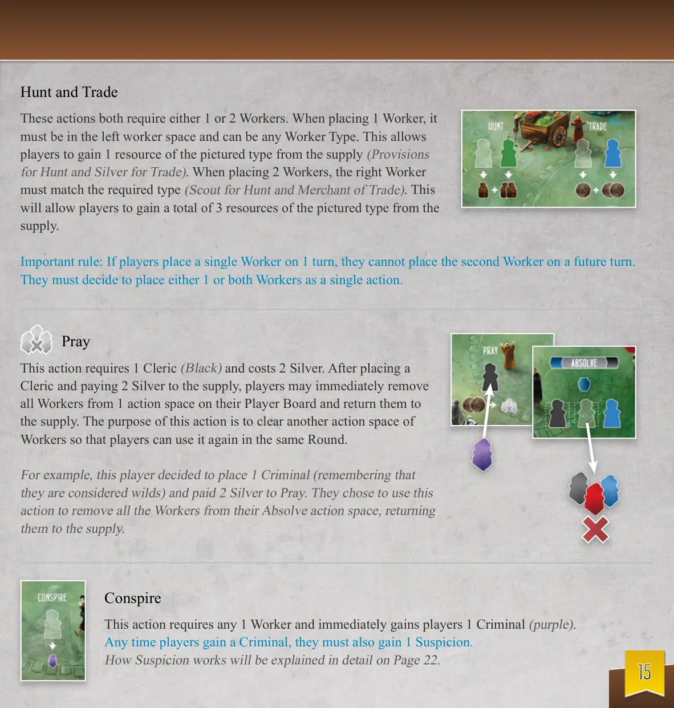
📝 第 15 页 AI 机翻对照（点击展开）
此行动需要 1 名牧师（黑色）并花费 2 枚银币。在放置一名牧师并向供应区支付 2 枚银币后，玩家可以立即从其玩家版图上的 1 个行动空间移除所有工人，并将其返回供应区。此行动的目的是清空另一个行动空间上的工人，以便玩家可以在同一轮中再次使用它。
例如，这名玩家决定放置 1 名罪犯（记住它们被视为万能牌）并支付 2 枚银币来祈祷。他们选择使用此行动来移除其赦免行动空间中的所有工人，将其返回供应区。
此行动需要任意 1 名工人，并立即让玩家获得 1 名罪犯（紫色）。
每当玩家获得罪犯时，他们还必须获得 1 点嫌疑值。嫌疑值的工作原理将在第 22 页详细解释。
祈祷
密谋
这两项行动都需要 1 或 2 名工人。当放置 1 名工人时，它必须放在左侧工人空间，可以是任何类型的工人。这使玩家能够从供应区获得 1 张所示类型的资源（狩猎对应补给，贸易对应银币）。当放置 2 名工人时，右侧的工人必须符合所需类型（狩猎对应侦察兵，贸易对应商人）。这将使玩家能够从供应区总共获得 3 张所示类型的资源。
重要规则：如果玩家在一回合内放置了 1 名工人，他们不能在未来的回合中放置第二名工人。他们必须决定放置 1 名工人或两名工人作为单个行动。
狩猎和贸易
📝 第 16 页 AI 机翻对照（点击展开）
玩家板块行动
此行动需要 3 个工人（1 个侦察兵，1 个任意类型的工人和 1 个牧师）以及越来越多的补给。
每个僧侣上方的补给成本已显示在玩家板块上。前 3 个僧侣需要 1 点补给来征募。接下来的 2 个需要 2 点补给，最后 2 个需要 3 点补给。玩家必须始终征募他们最左侧可用的僧侣。他们不能按任意选择的顺序放置它们。
执行此行动时，玩家正在使用他们的信仰属性将僧侣放置到主版图上。每个玩家的信仰决定了他们可以征募僧侣的位置。这一限制由主版图右下角显示的信仰旗帜表示。从左到右，每个区域（直接放置外来者卡牌上方的区域）需要越来越多的信仰（第一个区域不需要信仰，第二个区域需要 2 点或更多信仰，第三个区域需要 4 点或更多信仰，等等）。为了将僧侣征募到选定的区域，还必须有可用的空间来放置它（不已有僧侣或前哨站）。这些是主版图上的方形空间，内部有各种即时奖励的图片。还要注意，某些空间仅在较高的玩家数量下才可用。
例如，下方的玩家决定征募一个僧侣。由于他们之前已经发展了他们的征募行动，他们只需要 2 个工人。他们放置了 2 个工人并向供应区支付了 1 点补给。由于他们总共拥有 3 点信仰（2 点来自他们的属性轨道和 1 点来自他们的圣骑士），他们决定将僧侣征募到主版图第二区域的一个空间，立即从供应区获得 1 个侦察兵（绿色）。由于他们在征募的僧侣下揭示了一个影响力旗帜，他们也获得了 1 点影响力，立即将他们的指示物在属性轨道上向上移动。
征募
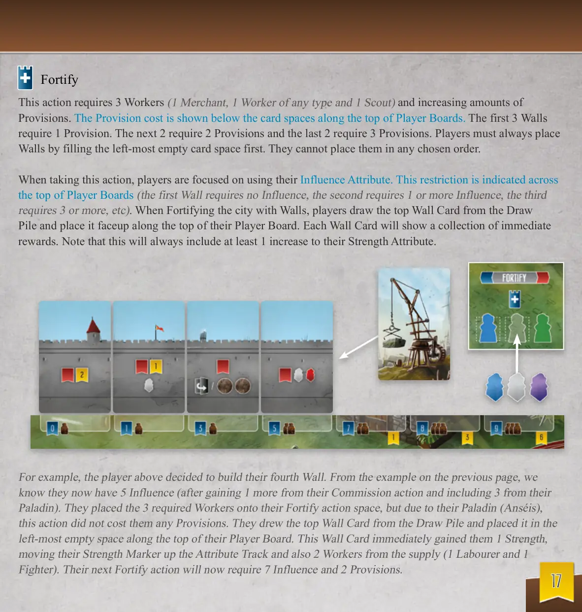
📝 第 17 页 AI 机翻对照（点击展开）
此行动需要 3 个工人（1 个商人、1 个任意类型的工人和 1 个斥候）以及越来越多的补给。补给成本显示在玩家版图顶部的卡牌空间下方。前 3 面墙需要 1 点补给。接下来的 2 面需要 2 点补给，最后 2 面需要 3 点补给。玩家必须总是通过填充最左边的空卡牌空间来放置墙。他们不能按任意选择的顺序放置。
执行此行动时，玩家专注于使用他们的影响力属性。这一限制显示在玩家版图顶部（第一面墙不需要影响力，第二面需要 1 点或更多影响力，第三面需要 3 点或更多，以此类推）。当用墙加固城市时，玩家从牌库顶摸取一面墙牌，并将其正面朝上放置在他们玩家版图的顶部。每面墙牌都会显示一系列即时奖励。请注意，这总是包括至少对其力量属性的一次提升。
例如，上方的玩家决定建造他们的第四面墙。从前一页的示例中，我们知道他们现在有 5 点影响力（在通过佣金行动获得 1 点后，包括他们圣殿骑士的 3 点）。他们将所需的 3 个工人放置在他们的强化行动空间上，但由于他们的圣殿骑士（Anséis），此行动没有消耗任何补给。他们从牌库顶摸取一面墙牌，并将其放置在他们玩家版图顶部的最左边空位中。这面墙牌立即为他们获得了 1 点力量，将他们的力量标记沿属性轨道上移，还从供给中获得 2 个工人（1 个劳工和 1 个战士）。他们的下一次强化行动现在将需要 7 点影响力和 2 点补给。
强化
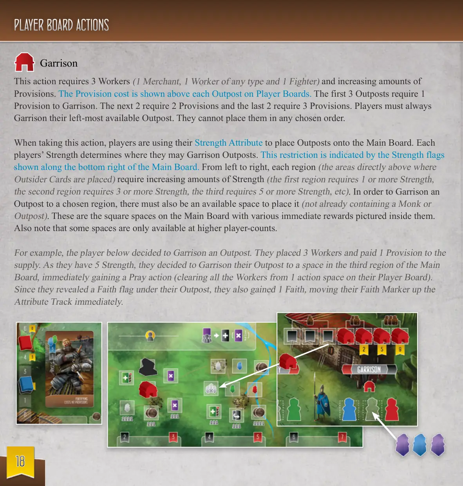
📝 第 18 页 AI 机翻对照（点击展开）
玩家板块行动
此行动需要3个工人（1个商人，1个任意类型的工人和1个战士）以及越来越多的补给。补给成本显示在玩家板块上每个前哨站的上方。前3个前哨站需要1点补给来驻防。接下来的2个需要2点补给，最后2个需要3点补给。玩家必须始终驻防他们最左侧可用的前哨站。他们不能按任意选择顺序放置。
执行此行动时，玩家正在使用他们的力量属性将前哨站放置到主版图上。每个玩家的力量决定了他们可以驻防前哨站的位置。这一限制由主版图右下角显示的力量旗帜表示。从左到右，每个区域（直接放置外来者卡牌上方的区域）需要越来越多的力量（第一个区域需要1点或更多力量，第二个区域需要3点或更多力量，第三个需要5点或更多力量，以此类推）。为了将前哨站驻防到选定区域，还必须有可用的空间来放置它（不包含僧侣或前哨站）。这些是主版图上的方形空间，内部有各种即时奖励的图片。还要注意，某些空间仅在较高玩家数量时可用。
例如，下方的玩家决定驻防一个前哨站。他们放置了3个工人并向供应区支付了1点补给。由于他们有5点力量，他们决定将前哨站驻防到主版图第三区域的一个空间，立即获得一个祈祷行动（清除其玩家板块上1个行动空间的所有工人）。由于他们在前哨站下揭示了一个信仰旗帜，他们还获得了1点信仰，立即将他们的信仰标记沿属性轨道向上移动。
驻防
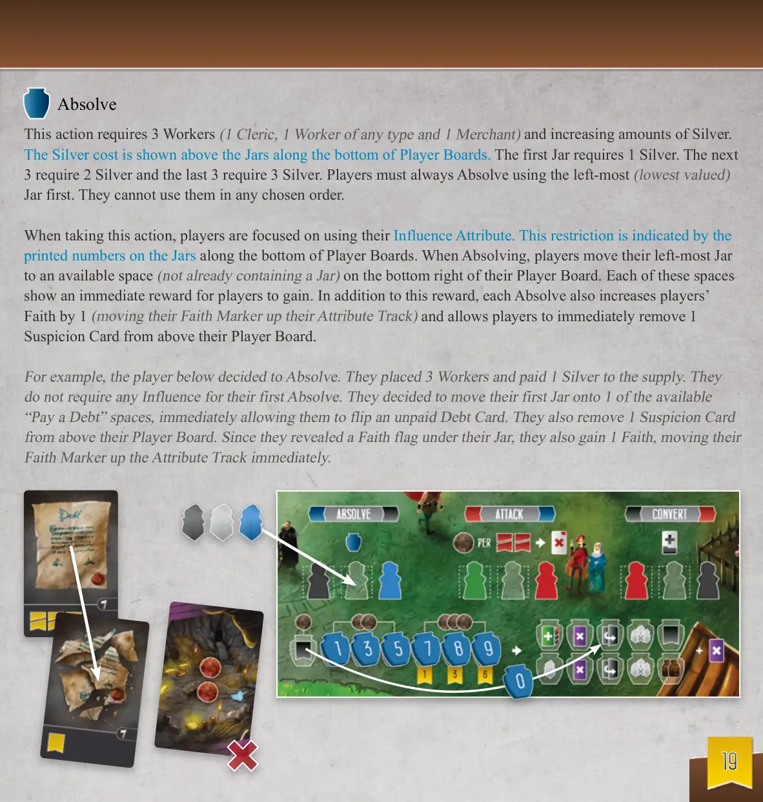
📝 第 19 页 AI 机翻对照（点击展开）
此行动需要 3 名工人（1 名牧师、1 名任意类型的工人和 1 名商人）和不断增加的银币。
银币成本显示在玩家版图底部罐子上方。第一个罐子需要 1 银币。接下来的 3 个罐子各需要 2 银币，最后 3 个罐子各需要 3 银币。玩家必须总是使用最左边（价值最低）的罐子首先进行赦免。他们不能按任意选择的顺序使用这些罐子。
执行此行动时，玩家专注于使用他们的影响力属性。此限制由玩家版图底部罐子上印刷的数字表示。进行赦免时，玩家将他们最左边的罐子移动到其玩家版图底部右侧的一个可用空间（不已有罐子的空间）。每个这些空间都显示玩家可获得的即时奖励。除了此奖励外，每次赦免还会增加玩家 1 点信仰（将他们的信仰标记在属性轨道上移）并允许玩家立即从其玩家版图上方移除 1 张嫌疑卡。
例如，下方的玩家决定进行赦免。他们放置了 3 名工人并向供应库支付了 1 银币。他们的第一次赦免不需要任何影响力。他们决定将第一个罐子移动到 1 个可用的"偿还债务"空间上，立即允许他们翻转一张未偿还的债务卡。他们还从其玩家版图上方移除了 1 张嫌疑卡。由于他们在罐子下发现了一个信仰标记，他们也获得了 1 点信仰，立即将他们的信仰标记在属性轨道上移。
赦免
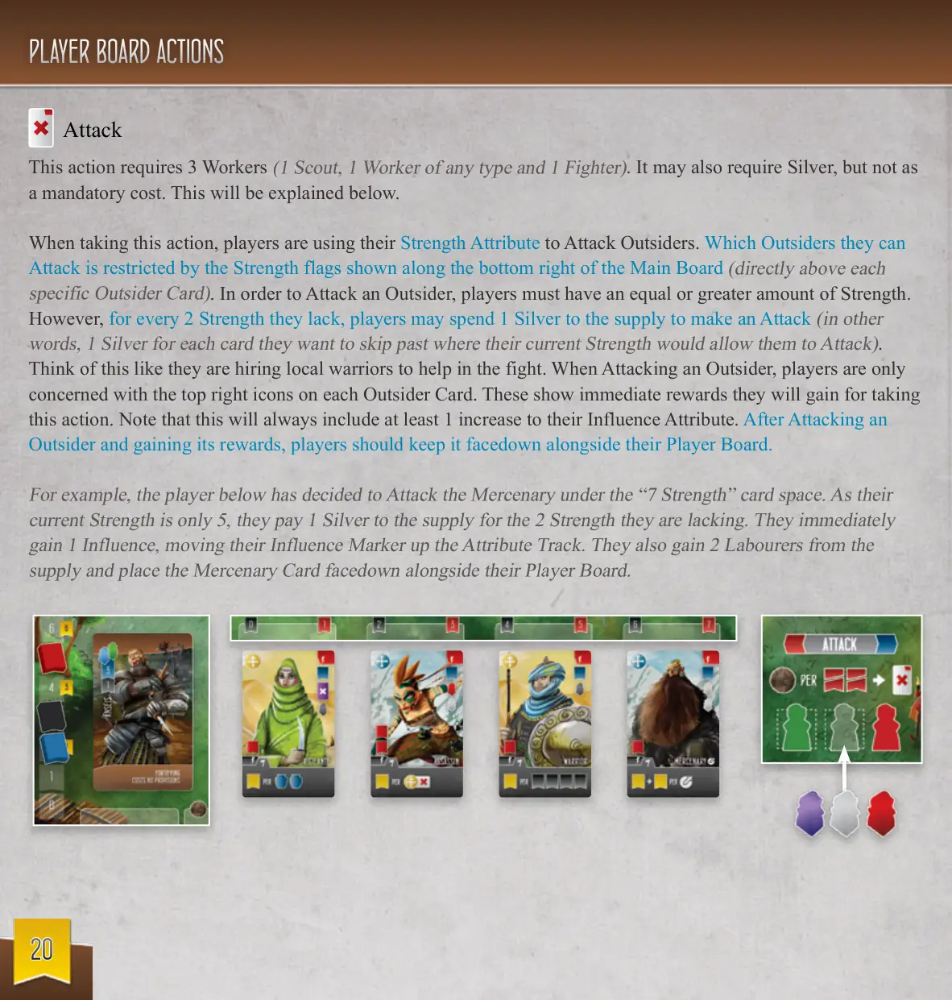
📝 第 20 页 AI 机翻对照（点击展开）
玩家版图行动
此行动需要 3 个工人（1 个侦察兵，1 个任意类型的工人和 1 个战士）。它也可能需要银币，但不是强制费用。这一点将在下面解释。
执行此行动时，玩家使用他们的力量属性攻击外来者。他们可以攻击哪些外来者受到主版图右下角显示的力量标志的限制（直接位于每个特定外来者卡牌上方）。为了攻击外来者，玩家必须拥有相等或更大的力量值。然而，对于他们缺少的每 2 点力量，玩家可以花费 1 个银币到供应池来进行一次攻击（换句话说，他们想要跳过的每张卡牌都需要花费 1 个银币，这些卡牌是他们当前力量值无法攻击的）。
可以想象成他们正在雇佣当地战士帮助战斗。当攻击外来者时，玩家只关心每张外来者卡牌右上角的图标。这些图标显示了他们执行此行动将获得的即时奖励。请注意，这总是包括至少对其影响力属性的一次提升。攻击外来者并获得其奖励后，玩家应将其面朝下放在自己的玩家版图旁边。
例如，下面的玩家决定攻击"7力量"卡牌空间下的雇佣兵。由于他们当前的力量只有 5，他们为缺少的 2 点力量支付 1 个银币到供应池。他们立即获得 1 点影响力，将他们的影响力标记在属性轨道上移。他们还从供应池中获得 2 个劳工，并将雇佣兵卡牌面朝下放在自己的玩家版图旁边。
攻击
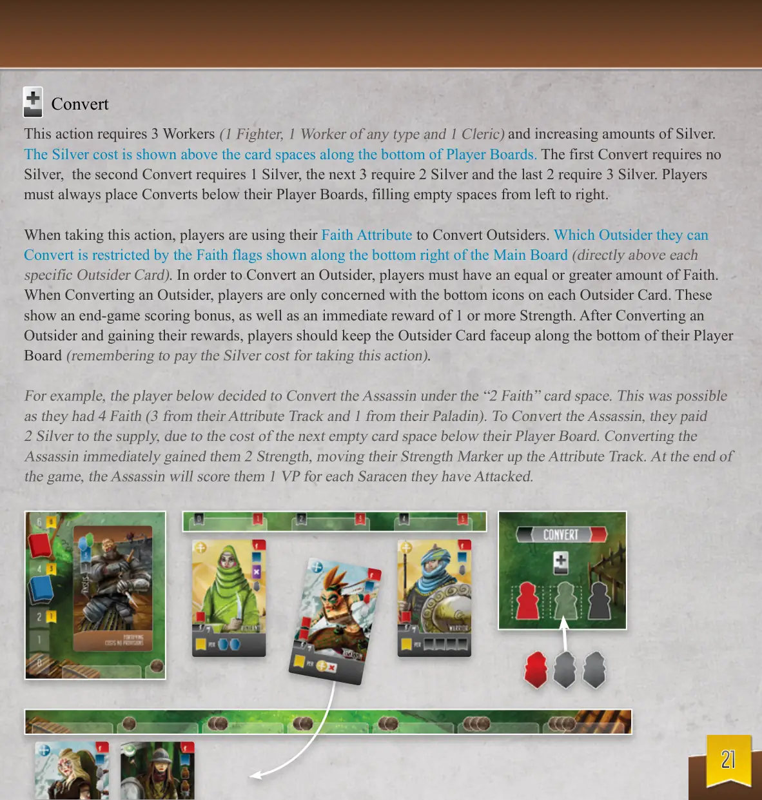
📝 第 21 页 AI 机翻对照（点击展开）
此行动需要 3 个工人（1 个战士、1 个任意类型的工人和 1 个牧师）以及越来越多的银币。
银币成本显示在玩家版图底部卡牌空间上方。第一次皈依不需要银币，第二次皈依需要 1 银币，接下来的 3 次皈依需要 2 银币，最后 2 次皈依需要 3 银币。玩家必须始终将皈依板块放置在其玩家版图下方，从左到右填满空位。
执行此行动时，玩家正在使用他们的信仰属性来皈依外人。他们可以皈依哪些外人受到主版图右下角显示的信仰标记的限制（直接位于每个特定外人卡牌上方）。为了皈依外人，玩家必须拥有相等或更多的信仰值。
当皈依外人时，玩家只关心每张外人卡牌底部的图标。这些图标显示游戏结束时的得分奖励，以及 1 点或更多的力量立即奖励。在皈依外人并获得奖励后，玩家应将外人卡牌面朝上放置在其玩家版图底部（记住为执行此行动支付银币成本）。
例如，下方的玩家决定在"2 信仰"卡牌空间下皈侠除恶者。这是可能的，因为他们拥有 4 点信仰（3 点来自他们的属性轨道和 1 点来自他们的圣骑士）。为了皈侠除恶者，他们向供应库支付了 2 银币，这是由于其玩家版图下方下一个空卡牌空间的成本。皈侠除恶者立即为他们获得了 2 点力量，将他们的力量标记在属性轨道上移动。在游戏结束时，除恶者将为他们每攻击一名萨拉森人获得 1 VP。
皈依
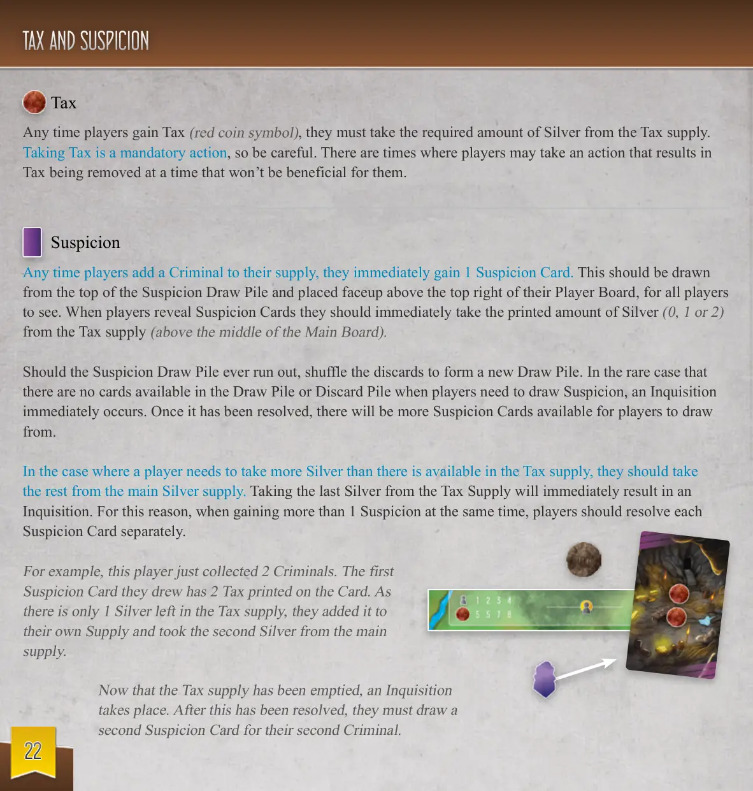
📝 第 22 页 AI 机翻对照（点击展开）
税收与嫌疑
每当玩家将罪犯添加到他们的供应中时，他们立即获得1张嫌疑卡。这应从嫌疑牌库顶摸取，并面朝上放置在其玩家版图右上角，供所有玩家查看。当玩家展示嫌疑卡时，他们应立即从税收供应区（位于主版图上方中部）取走卡面上印制的银币数量（0、1或2）。
如果嫌疑牌库用完，应将弃牌堆洗混形成新的牌库。在极少数情况下，当玩家需要摸取嫌疑卡而牌库和弃牌堆都没有可用卡牌时，立即发生宗教审判。一旦宗教审判解决，就会有更多的嫌疑卡供玩家摸取。
当玩家需要从税收供应区取走超过可用数量的银币时，他们应从主银币供应区取走剩余部分。取走税收供应区最后一块银币将立即导致宗教审判。因此，当同时获得超过1点嫌疑时，玩家应分别处理每张嫌疑卡。
每当玩家获得税收（红色硬币符号），他们必须从税收供应区取走所需数量的银币。获得税收是强制行动，所以要小心。有时玩家可能会采取行动，导致税收在不利于他们的时间被移除。
例如，这位玩家刚刚收集了2个罪犯。他们摸取的第一张嫌疑卡上印有2点税收。由于税收供应区只剩1块银币，他们将其加入自己的供应区，并从主供应区取走了第二块银币。
现在税收供应区已空，发生宗教审判。宗教审判解决后，他们必须为第二个罪犯摸取第二张嫌疑卡。
嫌疑
税收
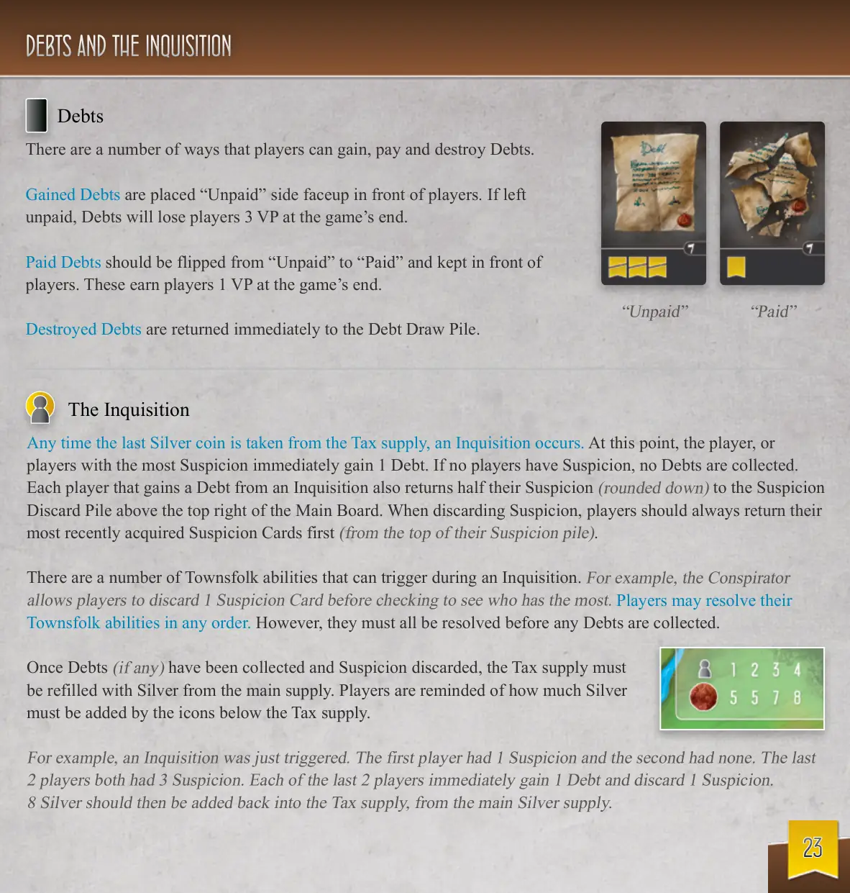
📝 第 23 页 AI 机翻对照（点击展开）
"未支付"
"已支付"
玩家可以通过多种方式获得、支付和销毁债务。
获得的债务放置在玩家面前，"未支付"面朝上。如果未支付，债务将在游戏结束时使玩家失去3 VP。
已支付的债务应从"未支付"翻转为"已支付"，并保留在玩家面前。这些债务在游戏结束时为玩家赚取1 VP。
被销毁的债务立即返回债务牌库。
债务
每当从税收供应区中取走最后一块银币时，就会发生宗教审判。此时，怀疑度最高的玩家（或多名玩家）立即获得1点债务。如果没有玩家拥有怀疑度，则不收集任何债务。
从宗教审判中获得债务的每位玩家也将其一半的怀疑度（向下取整）返回到主版图右上方的怀疑度弃牌堆。在弃置怀疑度时，玩家应总是先弃置最近获得的怀疑度牌（从其怀疑度牌堆的顶部开始）。
有多个城镇居民能力可以在宗教审判期间触发。例如，阴谋家允许玩家在检查谁拥有最高怀疑度之前弃置1张怀疑度牌。玩家可以按任何顺序解决其城镇居民能力。然而，所有能力必须在收集任何债务之前全部解决。
一旦债务（如果有）被收集且怀疑度被弃置，税收供应区必须从主供应区用银币重新填充。玩家通过税收供应区下方的图标提醒需要添加多少银币。
例如，刚刚触发了宗教审判。第一位玩家有1点怀疑度，第二位没有。最后两位玩家各有3点怀疑度。最后两位玩家立即各获得1点债务并弃置1点怀疑度。
然后应从主银币供应区向税收供应区添加8枚银币。
宗教审判
债务与宗教审判
📝 第 24 页 AI 机翻对照（点击展开）
弃权
当玩家没有更多可用工人可以执行行动，或者当他们决定不再执行任何行动时，
他们必须弃权。此时，他们必须从玩家版图上清除所有工人，并将它们归还到主
供应区。如果他们的供应区中还有剩余工人，玩家可以携带最多3个工人进入下一轮。
如果他们有超过3个工人，必须将多余的工人归还到主供应区。
当玩家弃权后，他们就不能再在当前轮中执行任何行动。然而，他们仍然可能受到宗教审判的影响（可能获得债务并失去怀疑值）。此外，即使玩家已经弃权，一些城镇居民的能力仍然可以被触发（小贩、阴谋家、侍从等）。
一旦所有玩家都弃权，请遵循第10页概述的刷新步骤（步骤7）。
如果这是第七轮，游戏结束，进行计分。
游戏在第七轮结束时立即结束。此时，玩家应计算以下各项的分数：
完成的国王命令
委托（如果完成5个或更多）
属性轨道
防御工事（如果完成5个或更多，加上特定城墙上的VP）
发展（如果完成6个或更多）
驻军（如果完成5个或更多）
债务（已支付和未支付的）
赦免（如果完成5个或更多）
白银/补给品（每3个一组得1VP）
皈依者
总分最高的玩家被宣布为获胜者。如果平局，则国王命令中获得最多胜利点的平局玩家获胜。如果仍然平局，则怀疑值最少的平局玩家获胜。如果仍然平局，所有平局玩家共享胜利。
游戏结束与计分
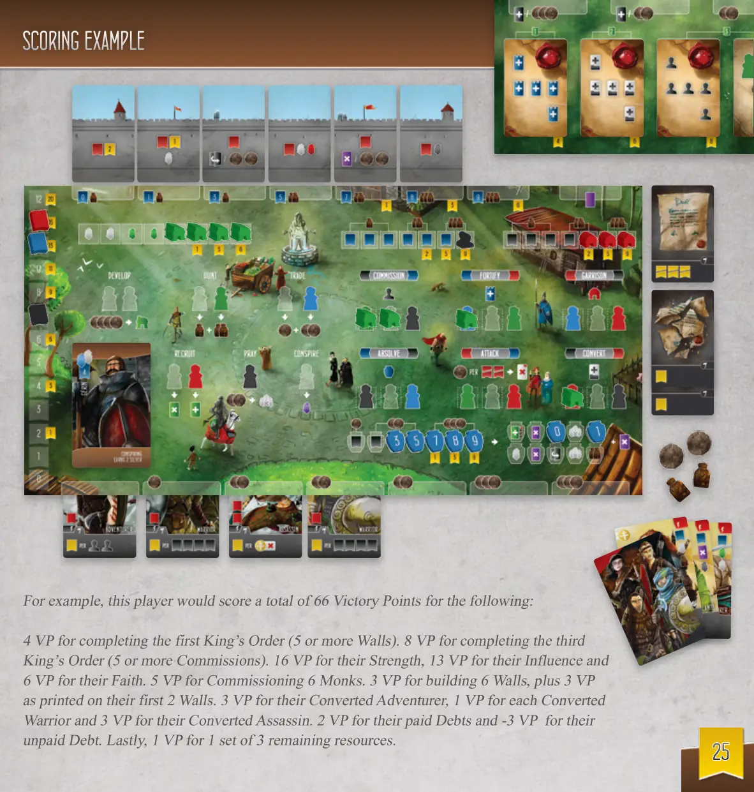
📝 第 25 页 AI 机翻对照（点击展开）
例如，这个玩家将因以下各项获得总共66个胜利点：
完成第一个国王命令（5个或更多城墙）得4VP。完成第三个国王命令（5个或更多委托）得8VP。力量属性得16VP，影响力属性得13VP，信仰属性得6VP。委托6个僧侣得5VP。建造6面城墙得3VP，加上其前2面城墙上印刷的3VP。皈依的冒险者得3VP，每个皈依的战士得1VP，皈依的刺客得3VP。已支付债务得2VP，未支付债务扣3VP。最后，剩余资源中1组3个得1VP。
计分示例
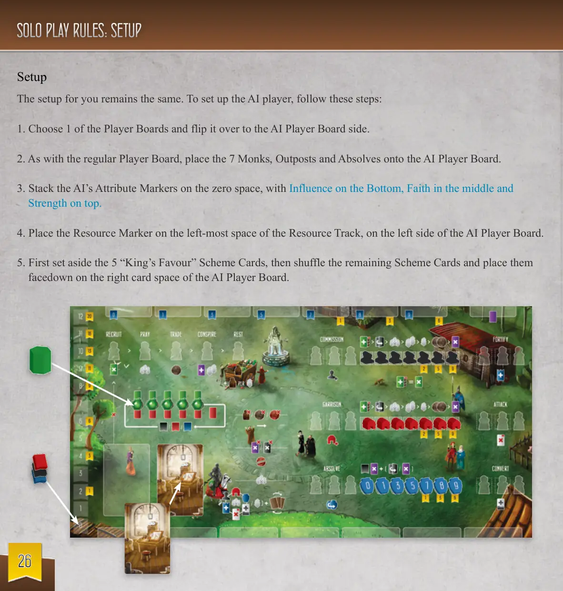
📝 第 26 页 AI 机翻对照（点击展开）
单人模式规则：设置
你的设置保持不变。要设置AI玩家，请遵循以下步骤：
- 选择1个玩家版图并将其翻到AI玩家版图面。
- 与常规玩家版图一样，将7个僧侣、前哨站和赦免物放置到AI玩家版图上。
- 将AI的属性指示物堆叠在零位格上，影响力在最底层，信仰在中间，力量在最上层。
- 将资源指示物放置在AI玩家版图左侧的资源轨道的最左侧格子上。
- 首先预留5张"国王恩宠"方案卡，然后将剩余的方案卡洗牌并面朝下放置在AI玩家版图的右侧卡牌位置。
设置
📝 第 27 页 AI 机翻对照（点击展开）
- 决定你希望游玩的难度。根据下表，洗混所有6张国王命令卡并揭示指定数量的卡。对于每张揭示的卡，将1个AI的工作坊放置到AI玩家版图上指定的行动空间。
简单 = 1张国王命令卡
标准 = 3张国王命令卡
困难 = 5张国王命令卡。
例如，假设你决定尝试标准难度并揭示了3张国王命令卡（委托、攻击和赦免）。你将把1个AI工作坊放置到AI玩家版图上的这些行动空间中的每一个上。
完成此操作后，重新洗混国王命令卡并根据常规设置规则将3张面朝下放置在主版图上。
- 在将国王命令卡和国王恩宠卡都放置到主版图上后，在每个国王命令卡上放置1个AI工作坊，并在主版图上的每个国王恩宠卡上放置1张"国王恩宠"方案卡正面朝上。
8. 不需要起始玩家标记，因为你将总是先行动。
在第1-3轮，将AI玩家的工作坊从国王命令卡顶部添加到与揭示的国王命令相匹配的行动空间。这将帮助AI玩家专注于完成国王命令。在第3-7轮，只需将1张"国王恩宠"方案卡添加到方案弃牌堆中。
当揭示酒馆卡时，只揭示2张。你像平常一样选择1张。AI玩家不会从酒馆卡中获得工人，但会立即从未被选择的酒馆卡上的每个罪犯处获得1点嫌疑。
轮次设置和酒馆卡
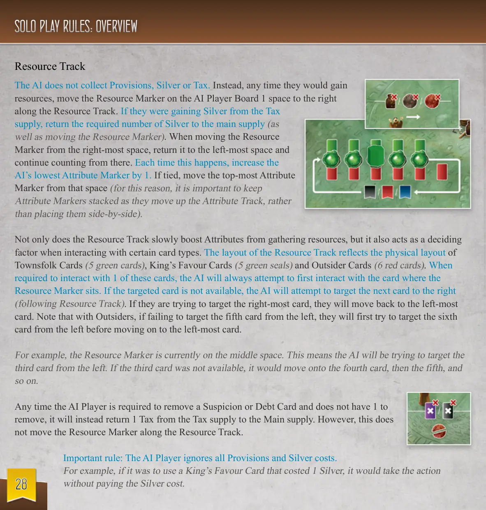
📝 第 28 页 AI 机翻对照（点击展开）
单人模式规则：概述
AI不收集物资、银币或税收。相反，每当它们本应获得资源时，将AI玩家版图上的资源指示物沿着资源轨道向右移动1格。如果它们是从税收供应中获得银币，则将所需数量的银币返还到主供应中（同时移动资源指示物）。当从最右侧的格子移动资源指示物时，将其返回到最左侧的格子并从那里继续计数。每次发生这种情况时，将AI的最低属性指示物增加1。如果有平局，则移动该空间中最上方的属性指示物（因此，当属性指示物沿着属性轨道向上移动时，将它们堆叠在一起而不是并排放置非常重要）。
资源轨道不仅通过收集资源缓慢提升属性，而且在与某些卡牌类型互动时也作为决定因素。资源轨道的布局反映了城镇居民卡牌（5张绿色卡牌）、国王恩宠卡牌（5个绿色印章）和外来者卡牌（6张红色卡牌）的物理布局。当需要与这些卡牌之一互动时，AI将总是首先尝试与资源指示物所在位置的卡牌互动。如果目标卡牌不可用，AI将尝试与资源轨道右侧的下一张卡牌互动。如果它们尝试与最右侧的卡牌互动，它们将返回到最左侧的卡牌。注意，对于外来者，如果无法从左数第五张卡牌互动，它们将首先尝试与从左数第六张卡牌互动，然后再移动到最左侧的卡牌。
例如，资源指示物当前位于中间格子。这意味着AI将尝试与从左数第三张卡牌互动。如果第三张卡牌不可用，它将移动到第四张卡牌，然后是第五张，依此类推。
每当AI玩家需要移除一张嫌疑卡或债务卡但没有可移除的卡牌时，它将改为从税收供应中返还1税收到主供应。然而，这不会沿着资源轨道移动资源指示物。
重要规则：AI玩家忽略所有物资和银币成本。
例如，如果它要使用一张花费1银币的国王恩宠卡牌，它将不支付银币成本直接执行行动。
资源轨道
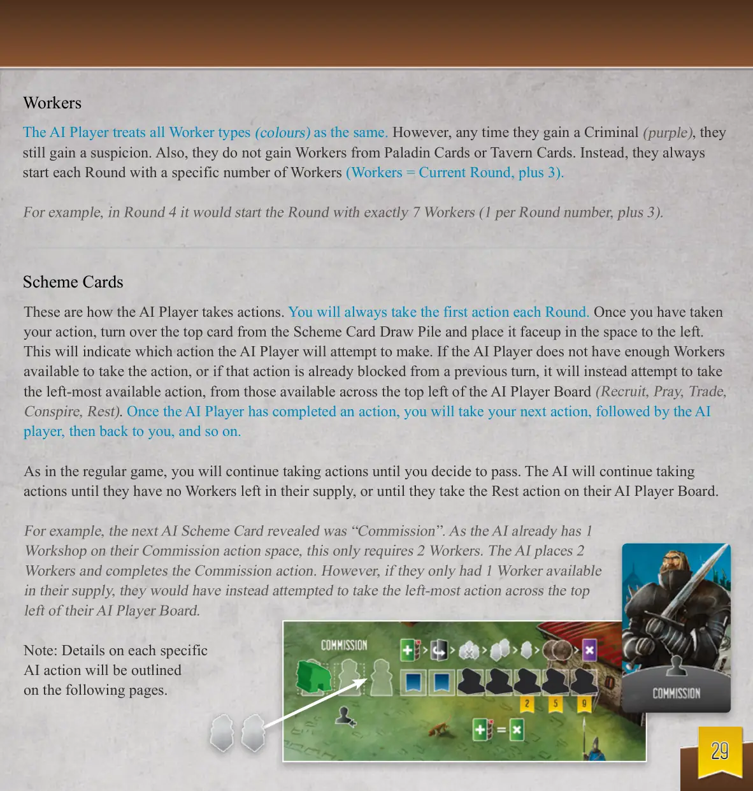
📝 第 29 页 AI 机翻对照（点击展开）
AI玩家将所有工人类型（颜色）视为相同。然而，每当他们获得一个罪犯（紫色）时，他们仍然会获得一个嫌疑点。此外，他们不会从圣骑士卡牌或酒馆卡牌中获得工人。相反，他们总是在每轮开始时拥有特定数量的工人（工人数=当前轮数+3）。
例如，在第4轮，它将以恰好7个工人开始该轮（每个轮数1个，外加3个）。
工人
这些是AI玩家执行行动的方式。你将总是每轮首先行动。一旦你完成了你的行动，从方案卡牌堆顶翻开一张牌，并将其正面朝上放置在左侧的空间。这将指示AI玩家将尝试执行的行动。如果AI玩家没有足够的可用工人来执行该行动，或者该行动因之前的回合已被阻挡，他们将尝试从AI玩家版图左上角可用的行动中执行最左侧的可行动作（招募、祈祷、交易、密谋、休息）。一旦AI玩家完成了一个行动，你将进行你的下一个行动，然后是AI玩家，再回到你，以此类推。
如同在常规游戏中一样，你将继续执行行动，直到你决定跳过。AI将继续执行行动，直到他们的工人储备中没有剩余工人，或者他们在AI玩家版图上执行了休息行动。
例如，下一个揭示的AI方案卡是"委托"。由于AI已经在委托行动空间上拥有1个工坊，这只需要2个工人。AI放置2个工人并完成了委托行动。然而，如果他们储备中只有1个可用工人，他们将尝试执行其AI玩家版图左上角最左侧的行动。
注意：每个特定AI行动的细节将在以下页面概述。
方案卡
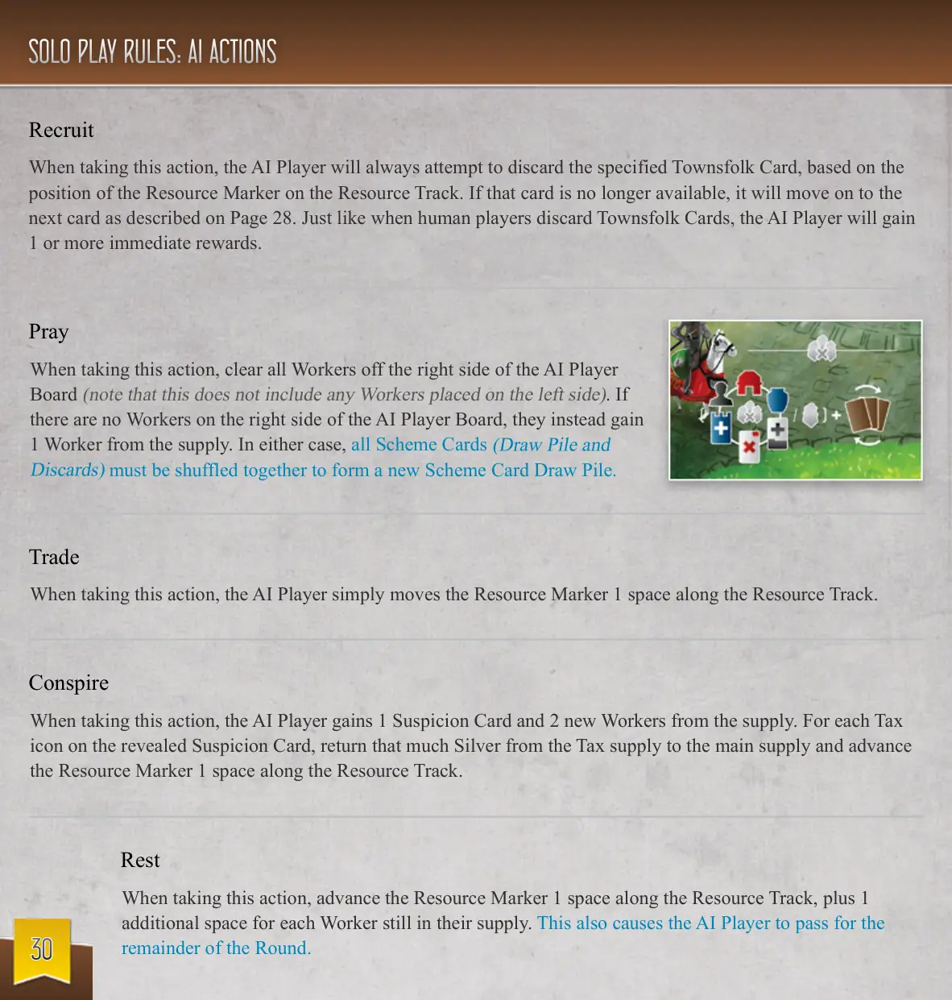
📝 第 30 页 AI 机翻对照（点击展开）
单人模式规则：AI行动
执行此行动时，AI玩家将始终尝试弃置指定的平民卡，这取决于资源标记在资源轨道上的位置。如果该卡牌不再可用，它将继续处理下一张卡牌，如第28页所述。就像人类玩家弃置平民卡一样，AI玩家将获得1个或更多即时奖励。
招募
执行此行动时，清除AI玩家版图右侧的所有工人（注意这不包括放置在左侧的任何工人）。如果AI玩家版图右侧没有工人，他们则从供应区获得1个工人。无论哪种情况，所有计划牌（牌库和弃牌堆）必须洗在一起，形成新的计划牌牌库。
执行此行动时，AI玩家获得1张嫌疑卡和2个来自供应区的新工人。对于已揭示的嫌疑卡上的每个税标，将相应数量的银币从税供应区返还到主供应区，并将资源标记沿资源轨道前进1格。
执行此行动时，AI玩家将资源标记沿资源轨道前进1格，加上其供应区中剩余的每个工人额外前进1格。这也导致AI玩家在剩余的轮次中跳过行动。
执行此行动时，AI玩家只需将资源标记沿资源轨道前进1格。
祈祷
密谋
休息
贸易
📝 第 31 页 AI 机翻对照（点击展开）
当执行这些行动中的任意一个时，AI玩家将始终尝试将其最左边的指示物（修道士用于委员会，前哨站用于驻军）放置到主版图上。当他们从修道士或前哨站下方揭示这些指示物时，也会立即获得指定的属性提升。就像人类玩家一样，AI玩家必须拥有所需的属性才能执行行动。在放置修道士和前哨站时，他们总是会按照特定顺序瞄准主版图上可用的区域。如果有多个相同奖励类型的区域可用，他们总是会瞄准主版图上最左边的区域。
AI玩家会首先瞄准"免费招募"区域，然后是"偿还债务"（仅当他们有未偿还的债务时），接着是"祈祷"、"获得2个工人"、"获得1个工人"、"获得2银币"，最后是"减少1点嫌疑"。请记住，招募总是会尝试弃掉一张城镇居民卡以获得即时奖励。此外，祈祷行动会导致他们清空AI玩家版图的右侧（或获得1个工人），并洗混所有阴谋卡。
委员会和驻军
执行此行动时，AI玩家必须有足够的影响力来瞄准其最左边的罐子。如果他们有，只需翻转目标罐子。AI玩家立即在其属性轨道上增加1点信仰，并减少1点嫌疑。他们还会翻转一个未偿还的债务，或额外减少1点嫌疑（按此顺序）。
执行此行动时，AI玩家必须有足够的影响力来建造其下一面墙。就像人类玩家加固时一样，AI玩家会将墙放置在其玩家版图上方的最左边区域，并获得所有印刷的奖励。请注意，如果墙卡提供奖励选择，AI总是会优先选择左侧选项。
赦免
加固
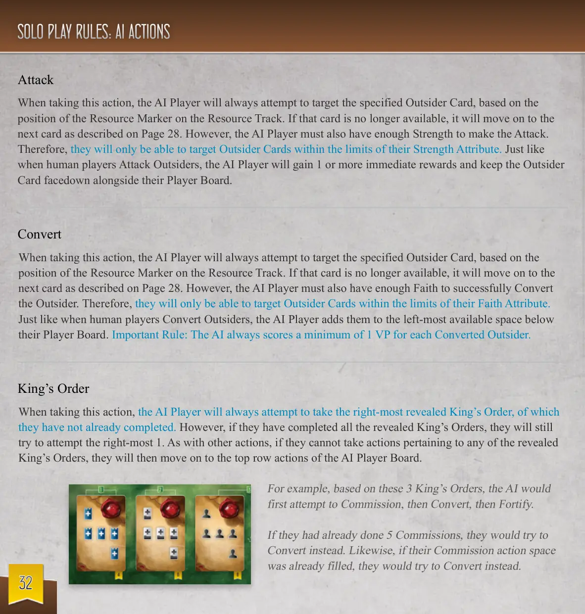
📝 第 32 页 AI 机翻对照（点击展开）
单人模式规则：AI行动
执行此行动时，AI玩家将始终尝试根据资源标记在资源轨道上的位置来攻击指定的局外人卡牌。如果该卡牌不再可用，将按照第28页所述转向下一张卡牌。然而，AI玩家也必须有足够的强度才能发起攻击。因此，他们只能在其强度属性限制范围内攻击局外人卡牌。就像人类玩家攻击局外人一样，AI玩家将获得1个或更多即时奖励，并将局外人卡牌面朝下放在其玩家板旁边。
攻击
执行此行动时，AI玩家将始终尝试根据资源标记在资源轨道上的位置来攻击指定的局外人卡牌。如果该卡牌不再可用，将按照第28页所述转向下一张卡牌。然而，AI玩家也必须有足够的信仰才能成功转化局外人。因此，他们只能在其信仰属性限制范围内攻击局外人卡牌。就像人类玩家转化局外人一样，AI玩家将他们添加到其玩家板下方最左侧的可用空间。重要规则：AI每转化一个局外人至少获得1个VP。
执行此行动时，AI玩家将始终尝试获取最右侧已揭示的国王令牌，且他们尚未完成的令牌。然而，如果他们已经完成了所有已揭示的国王令牌，他们仍会尝试获取最右侧的1个。与其他行动一样，如果他们无法执行任何已揭示国王令牌的相关行动，他们将转向AI玩家板顶行的行动。
例如，基于这3个国王令牌，AI将首先尝试征募，然后转化，然后加固。如果他们已经完成了5次征募，他们将尝试转化。同样，如果他们的征募行动空间已被填满，他们将尝试转化。
转化
国王令牌
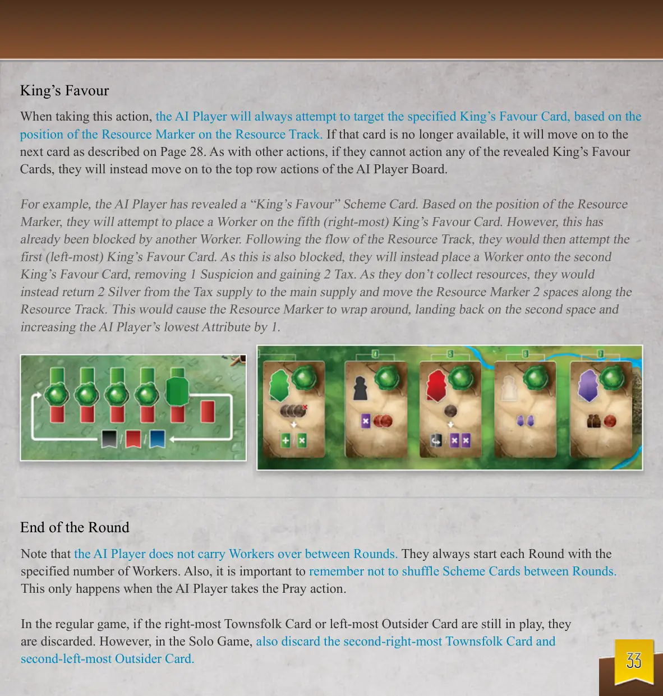
📝 第 33 页 AI 机翻对照（点击展开）
国王恩宠
执行此行动时，AI玩家将始终尝试根据资源标记在资源轨道上的位置，来锁定指定的国王恩宠卡牌。如果该卡牌不再可用，它将继续进行到第28页描述的下一张卡牌。与其他行动一样，如果他们无法执行任何已揭示的国王恩宠卡牌，他们将继续进行到AI玩家版图顶行的行动。
例如，AI玩家揭示了一张"国王恩宠"策略卡。根据资源标记的位置，他们将尝试将一个工人放置在第五张（最右侧）的国王恩宠卡牌上。然而，这已被另一个工人阻挡。沿着资源轨道的流程，他们将尝试第一张（最左侧）的国王恩宠卡牌。由于这也被阻挡，他们转而将一个工人放置在第二张国王恩宠卡牌上，移除1点嫌疑并获得2点税收。由于他们不收集资源，他们将转而从税收供应区返还2枚银币到主供应区，并将资源标记沿着资源轨道移动2格。这将导致资源标记环绕，回到第二格，并将AI玩家的最低属性增加1点。
请注意，AI玩家不会在轮次之间保留工人。他们总是在每轮开始时拥有指定数量的工人。另外，重要的是记住不要在轮次之间洗混策略卡。这仅在AI玩家执行祈祷行动时发生。
在常规游戏中，如果最右侧的市民卡牌或最左侧的外来者卡牌仍在游戏中，它们将被弃置。然而，在单人游戏中，也要弃置次右侧的市民卡牌和次左侧的外来者卡牌。
轮次结束
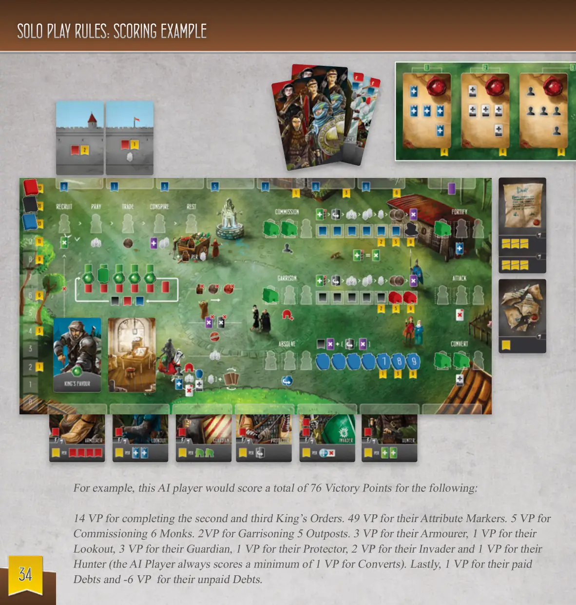
📝 第 34 页 AI 机翻对照（点击展开）
单人模式规则：计分示例
例如，这个AI玩家将获得以下总计76个胜利点：
完成第二和第三张国王订单获得14 VP。他们的属性标记获得49 VP。委托6名修士获得5 VP。驻守5个前哨站获得2 VP。他们的盔甲匠获得3 VP，他们的瞭望者获得1 VP，他们的守护者获得3 VP，他们的保护者获得1 VP，他们的入侵者获得2 VP，他们的猎人获得1 VP（AI玩家总是为皈依者获得至少1 VP）。最后，他们的已付债务获得1 VP，未付债务扣除6 VP。
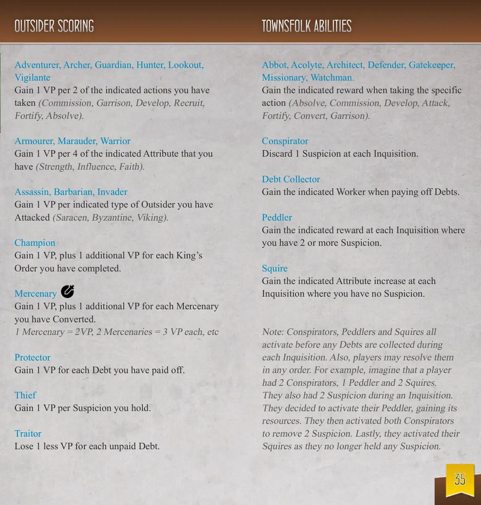
📝 第 35 页 AI 机翻对照（点击展开）
局外人计分
镇民能力
修道院长、侍僧、建筑师、防御者、守门人、
传教士、守卫。
在执行特定行动（赦免、委托、发展、攻击、
强化、皈依、驻守）时获得指定奖励。
阴谋家
每次宗教审判中弃置1点嫌疑。
讨债人
偿还债务时获得指定工人。
小贩
每次宗教审判中，当你拥有2点或更多嫌疑时，获得指定奖励。
侍从
每次宗教审判中，当你没有任何嫌疑时，获得指定属性提升。
注意：阴谋家、小贩和侍从都在每次宗教审判中任何债务被收集前激活。此外，玩家可以按任意顺序解决它们。例如，假设一个玩家有2个阴谋家、1个小贩和2个侍从。他们在一次宗教审判中有2点嫌疑。他们决定激活小贩，获得其资源。然后他们激活两个阴谋家，移除2点嫌疑。最后，他们激活侍从，因为他们不再持有任何嫌疑。
冒险家、弓箭手、守护者、猎人、瞭望员、
义警者
每执行2次指定行动（委托、驻守、发展、招募、强化、赦免）获得1VP。
盔甲匠、掠夺者、战士
每拥有4点指定属性（力量、影响力、信仰）获得1VP。
刺客、野蛮人、入侵者
每攻击1种指定类型的局外人（萨拉森人、拜占庭人、维京人）获得1VP。
冠军
获得1VP，外加每完成1项国王命令额外获得1VP。
雇佣兵
获得1VP，外加每转化1名雇佣兵额外获得1VP。
1名雇佣兵=2VP，2名雇佣兵=3VP/人，以此类推
保护者
每偿还1笔债务获得1VP。
盗贼
每持有1点嫌疑获得1VP。
叛徒
每笔未偿还债务少损失1VP。
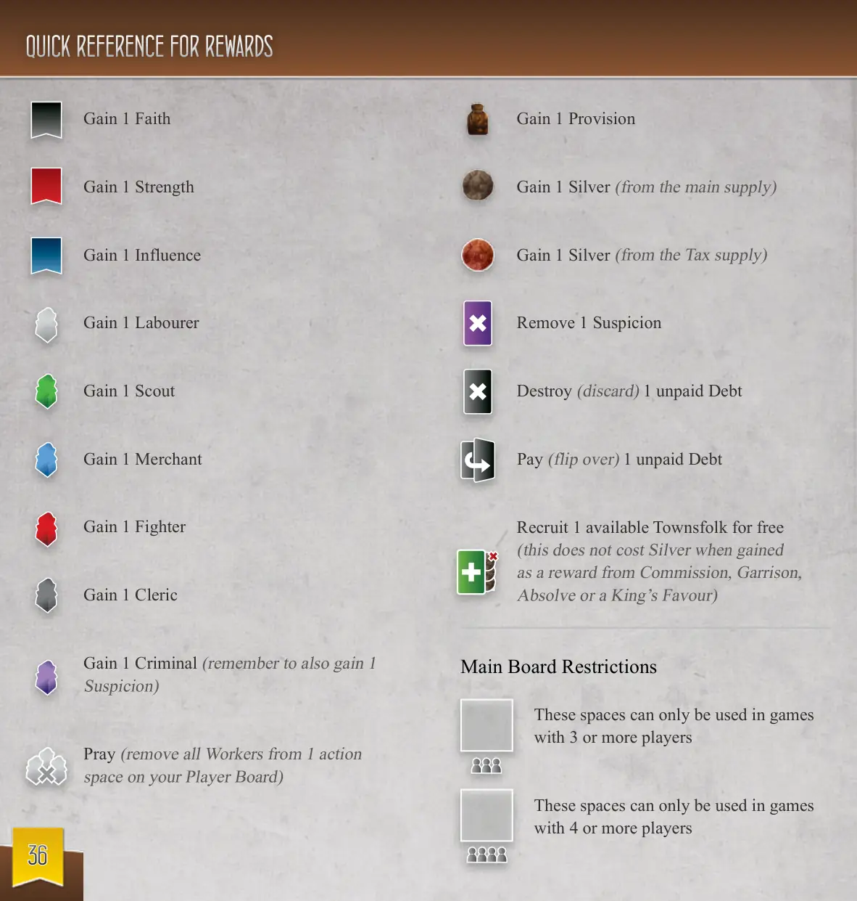
📝 第 36 页 AI 机翻对照（点击展开）
奖励快速参考
获得1点信仰
获得1点力量
获得1点影响力
获得1名劳工
获得1名侦察兵
获得1名商人
获得1名战士
获得1名神职人员
获得1名罪犯（同时记得获得1点嫌疑）
祈祷（从你的玩家版图上的1个行动空间移除所有工人）
获得1点补给
获得1银币（从主供应区）
获得1银币（从税收供应区）
移除1点嫌疑
摧毁（弃置）1笔未偿还债务
支付（翻转）1笔未偿还债务
免费招募1名可用的镇民
（当作为委托、驻守、赦免或国王恩典的奖励获得时，不花费银币）
这些空间只能在3人或以上玩家游戏中使用
这些空间只能在4人或以上玩家游戏中使用
主版图限制